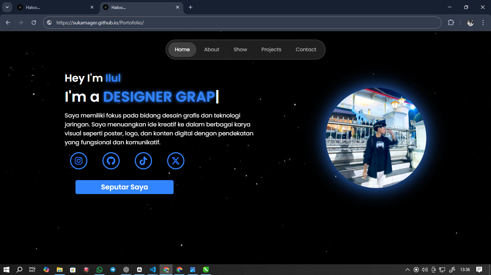
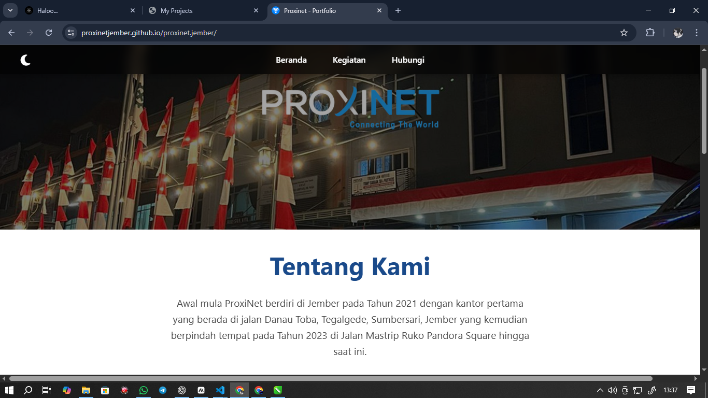
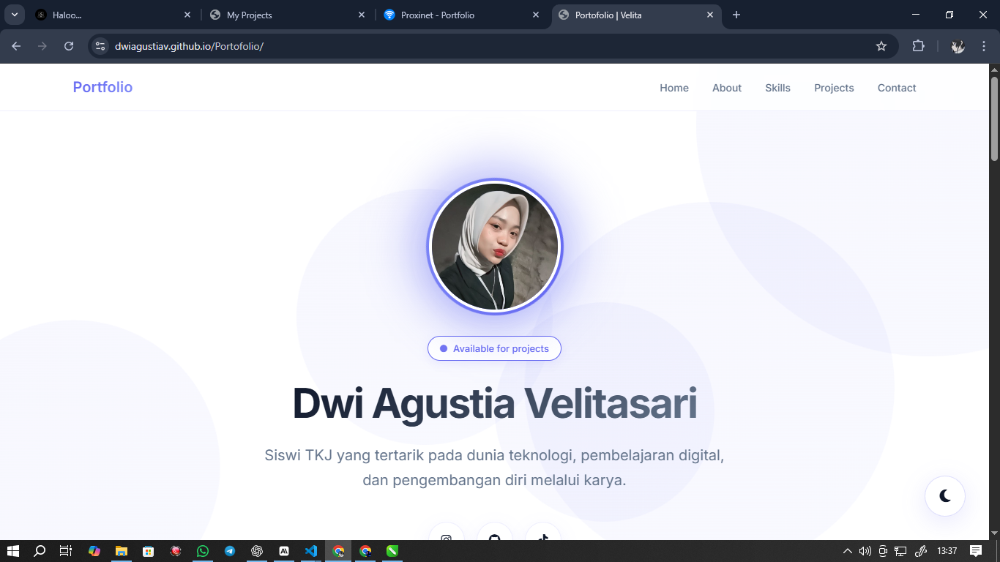
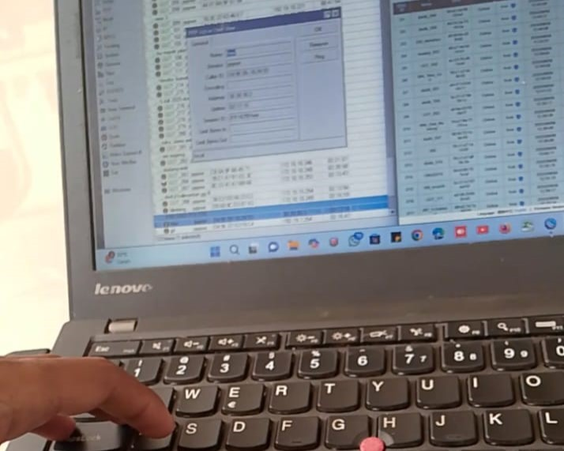
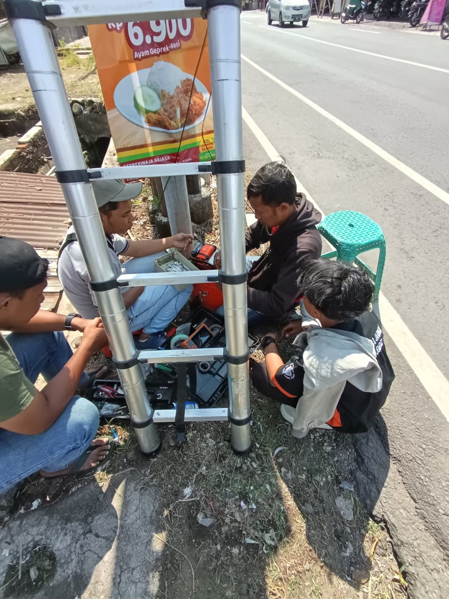
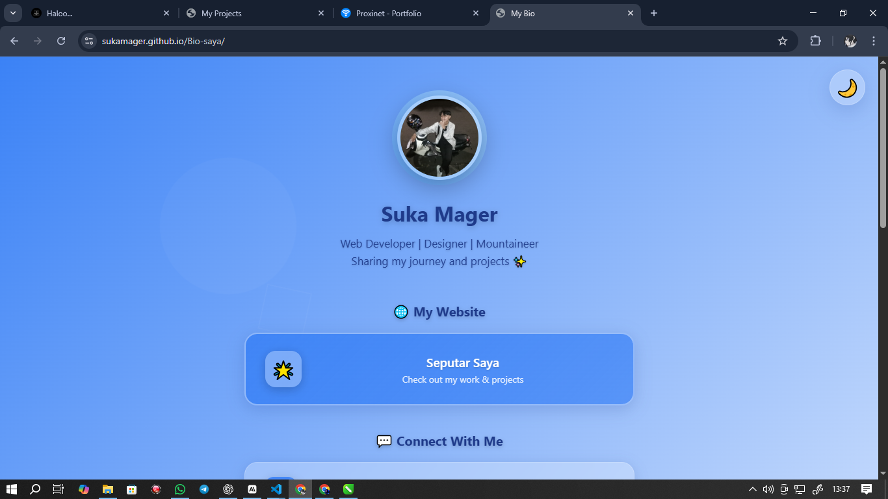
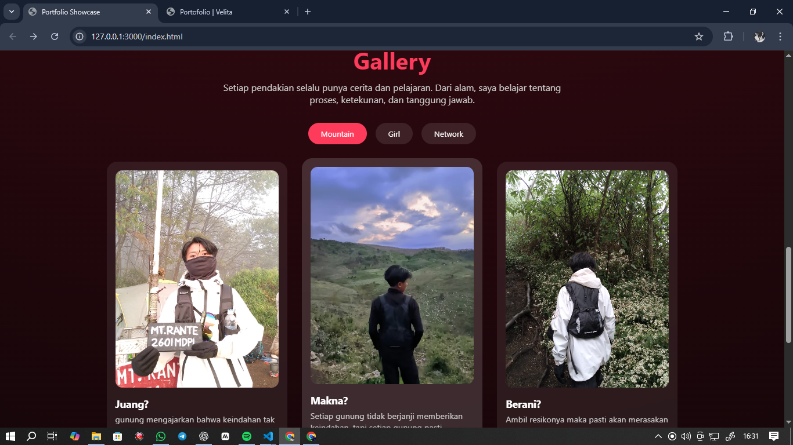
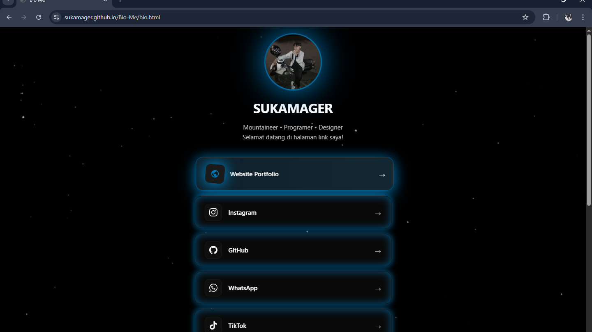
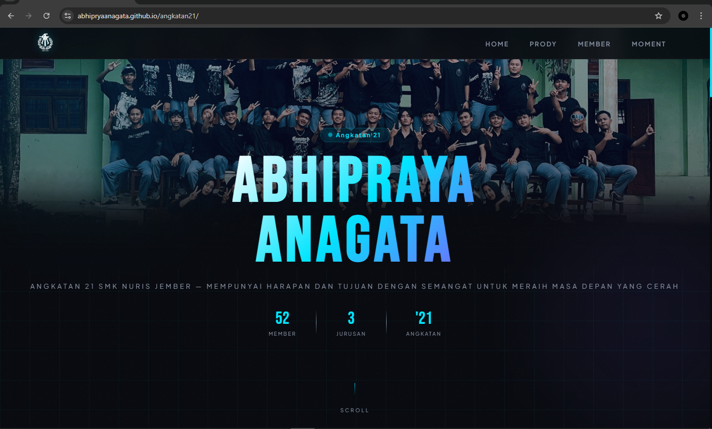

Membuat website biodata pribadi sebagai media pengenalan diri, kemudahan kontak, dan penyajian informasi CV secara ringkas.
Kunjungi
Website ini dibuat sebagai media informasi dan komunikasi PT. Proxinet Jember. Tujuannya untuk memudahkan penyampaian profil perusahaan dan akses kontak.
Kunjungi
Website portofolio ini dibuat sebagai media pengenalan diri dan kemudahan presentasi. Tampilan dirancang sederhana dan rapi agar informasi mudah disampaikan.
Kunjungi
Project ini berisi pengalaman membantu proses konfigurasi jaringan pada mitra baru PT. Proxinet. Fokus kegiatan adalah memastikan jaringan dapat digunakan dengan normal.
Kunjungi
Project ini berisi pengalaman pemasangan ODP dan penyambungan client baru pada jaringan FTTH. Fokus kegiatan adalah memastikan koneksi berjalan normal.
Kunjungi
Website bio link ini dibuat untuk mengumpulkan berbagai tautan media sosial dan informasi dalam satu halaman. Tujuannya untuk memudahkan akses dan berbagi profil secara praktis.
Kunjungi
Pembuatan website yang menyajikan informasi seputar hobi mendaki gunung sebagai media berbagi minat, dokumentasi, dan penyampaian konten secara visual.
Kunjungi
Pengembangan lanjutan website bio link sosial media dengan pembaruan tampilan dan struktur untuk meningkatkan kemudahan akses informasi dan kontak.
Kunjungi
Website ini dibuat sebagai media informasi dan dokumentasi angkatan sekolah. Menyajikan data siswa, kegiatan, serta momen kebersamaan dalam satu platform digital.
Kunjungi